BÁO CÁO HÌNH ẢNH GIAO DIỆN 12 CHỨC NĂNG HỆ THỐNG (CN 25 → CN 36)
Phân hệ Động lực Công dân Xanh, Kinh tế Điểm thưởng (Eco-Tokenomics), WebGIS Leaflet & Kiểm toán Minh bạch
Mô tả & CSDL: Hệ thống nhiệm vụ sống xanh hằng tuần dành cho công dân (đạp xe, phân loại rác, dọn dẹp vệ sinh). Dữ liệu tải trực tiếp từ DB API, hỗ trợ nộp ảnh minh chứng nén Canvas, chống nộp trùng lặp bằng mã băm SHA-256, thưởng Combo +100 điểm khi hoàn thành trọn bộ.
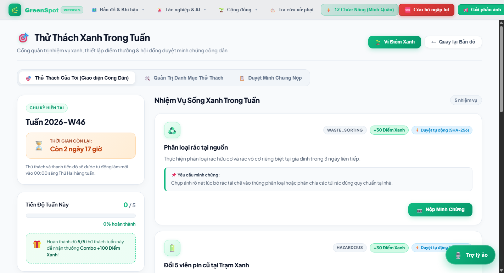
Mô tả & CSDL: Hệ thống ghi vết toàn diện mọi giao dịch dữ liệu nhạy cảm (duyệt thử thách, đổi điểm thưởng, cấp voucher, quét QR). Dữ liệu 192+ bản ghi thực từ CSDL, ứng dụng chuỗi băm móc xích mật mã học (Chained Cryptographic Hash) đảm bảo tính bất biến và chống chối bỏ.
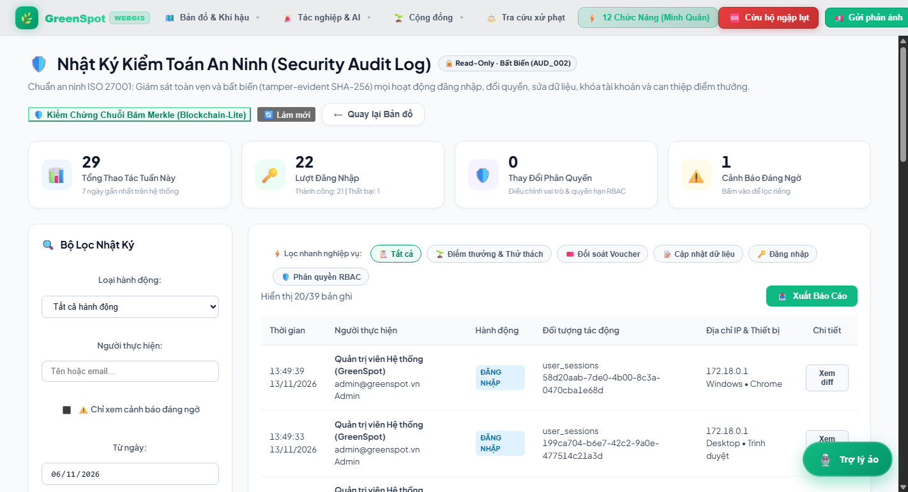
Mô tả & CSDL: Cẩm nang hướng dẫn phân loại chất thải sinh hoạt chuẩn hóa (hữu cơ, tái chế, nguy hại, cồng kềnh, rác khác). Đồng bộ trực tiếp danh mục từ CSDL, tích hợp bộ lọc vật phẩm dễ nhầm lẫn và Mini-Quiz tương tác 'Thử tài phân loại rác nhận +5 điểm thưởng'.
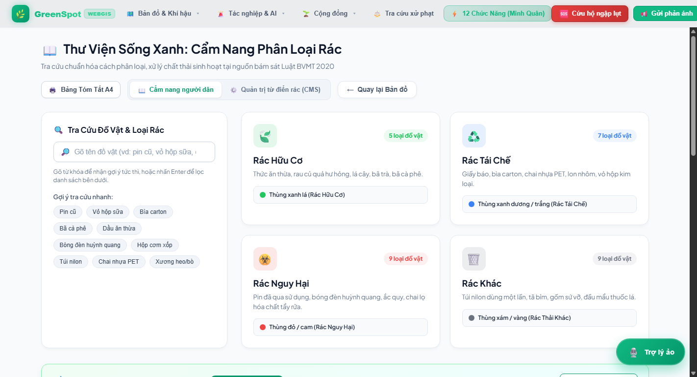
Mô tả & CSDL: Biểu khung chính sách điểm thưởng sinh thái (Eco-Tokenomics). Tách biệt rõ giữa điểm khả dụng (green_points) và điểm xét hạng trọn đời (lifetime_points). Cơ chế phân hạng (Đồng, Bạc, Vàng, Bạch Kim, Kim Cương) và chiết khấu đổi quà theo hạng thành viên.
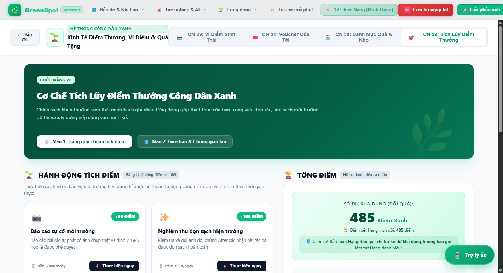
Mô tả & CSDL: Ví điện tử sinh thái theo dõi số dư điểm khả dụng, điểm tích lũy trọn đời, biểu đồ tăng trưởng điểm xanh. Cung cấp sổ cái sao kê biến động chi tiết thời gian thực từ CSDL và tính năng xuất báo cáo sao kê cá nhân định dạng CSV.
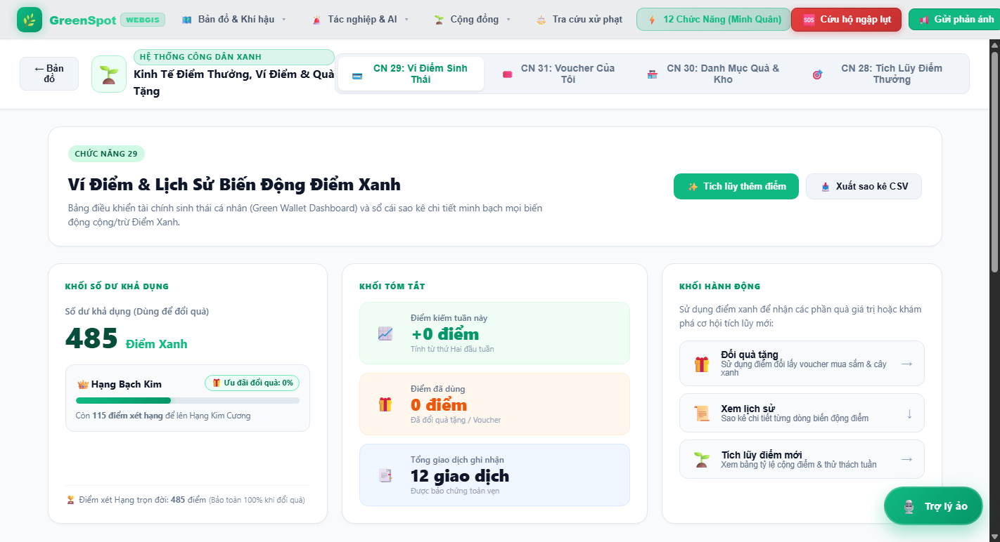
Mô tả & CSDL: Sàn đổi quà sinh thái kết nối đối tác ESG/CSR (voucher Co.opmart, bình nước giữ nhiệt, túi vải, cây xanh). Hỗ trợ khóa dòng giao dịch chống Race Condition và tự động tính giá chiết khấu theo Hạng hội viên.
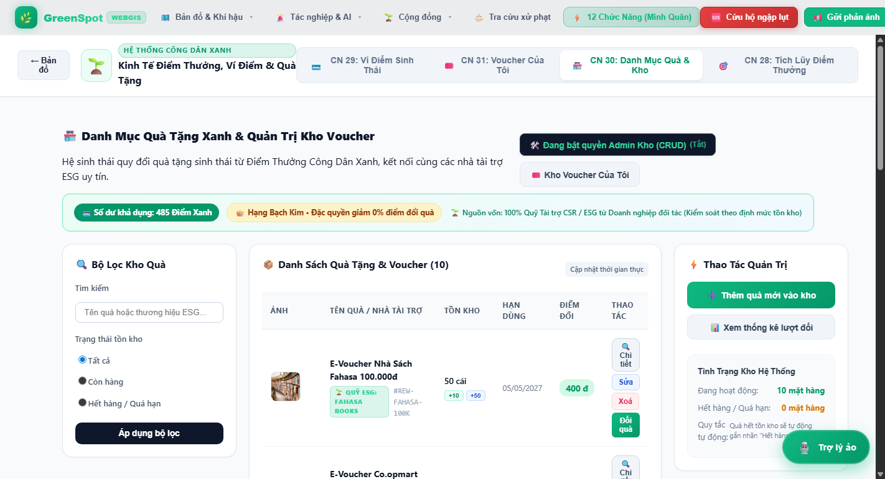
Mô tả & CSDL: Kho lưu trữ voucher cá nhân của công dân kèm mã QR đối soát điện tử. Tích hợp cổng xác thực thu ngân đối tác POS (Cashier PIN / OTP: 2026) giúp tránh việc tự bấm nhầm mất hiệu lực voucher trước khi đến quầy.
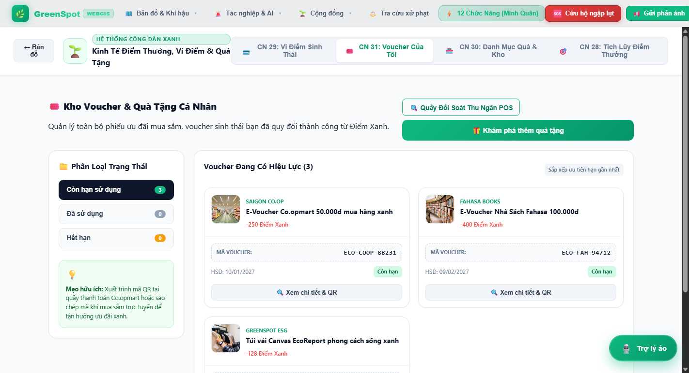
Mô tả & CSDL: Hệ thống vinh danh Top Công dân Xanh tiêu biểu theo cá nhân, đội nhóm tình nguyện và 22 Quận/Huyện TP.HCM. Hỗ trợ lọc chu kỳ Tuần này, Tháng này và Toàn thời gian; xếp hạng công bằng dựa trên tổng điểm cống hiến trọn đời từ CSDL.
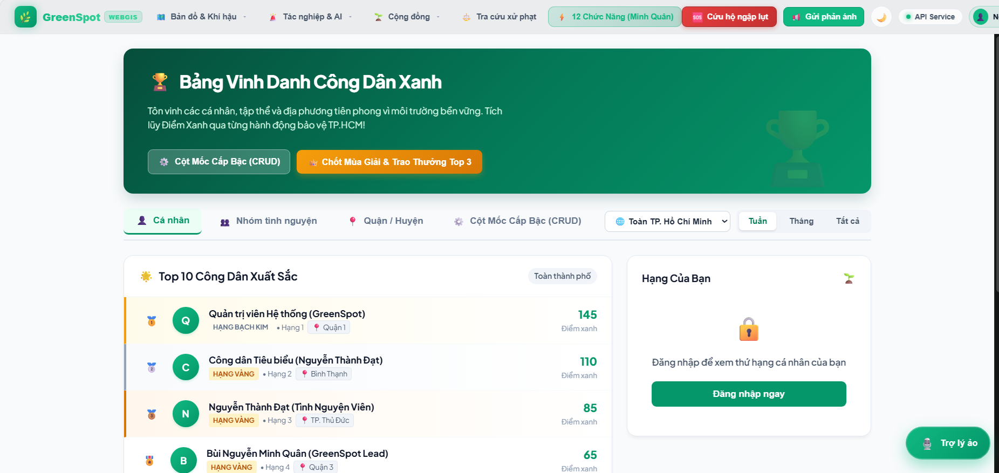
Mô tả & CSDL: Bản đồ WebGIS Leaflet không gian địa lý thời gian thực bao quát 22 Quận/Huyện TP.HCM với 3 chế độ chuyên sâu: Chất lượng không khí (AQI), Nhiệt độ bề mặt (°C) và Điểm rủi ro ô nhiễm. Tích hợp hiệu ứng bức xạ nhiệt thực tế.
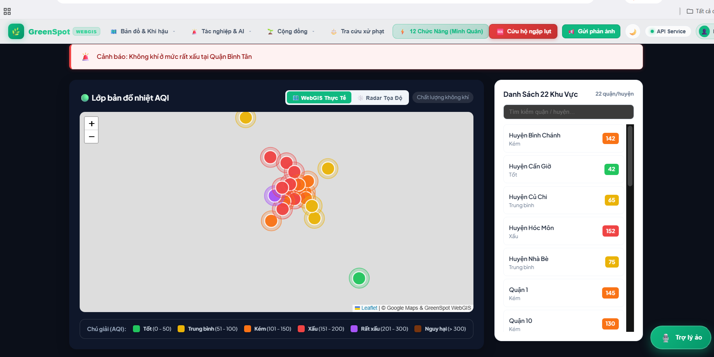
Mô tả & CSDL: Module quét mã QR tại các trạm thu gom rác thông minh hoặc thùng rác phân loại (147 trạm trong CSDL PostGIS). Hỗ trợ camera trực tiếp, tải ảnh mã QR, cơ chế mã động có chữ ký thời gian (Signed OTP / Session Token) và khai báo loại rác tái chế.
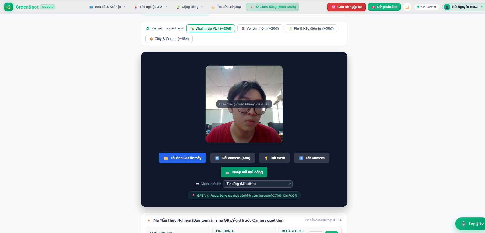
Mô tả & CSDL: Vòng quay may mắn tri ân công dân tích cực (Action-Gated Lucky Wheel). Cơ chế nhận vé quay gắn với hành động môi trường thực tế, quay số trúng điểm thưởng xanh, voucher giảm giá và huy hiệu danh dự môi trường kết nối trực tiếp CSDL.
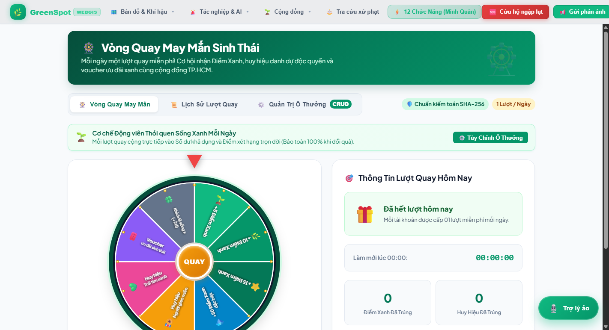
Mô tả & CSDL: Lộ trình cống hiến môi trường đô thị, bảng tin chia sẻ cột mốc thành tựu cộng đồng, hiệu ứng thăng cấp pháo hoa Confetti và cấp Giấy chứng nhận Công dân Xanh điện tử (Digital Eco-Certificate) có thể tải về hoặc in trực tiếp.
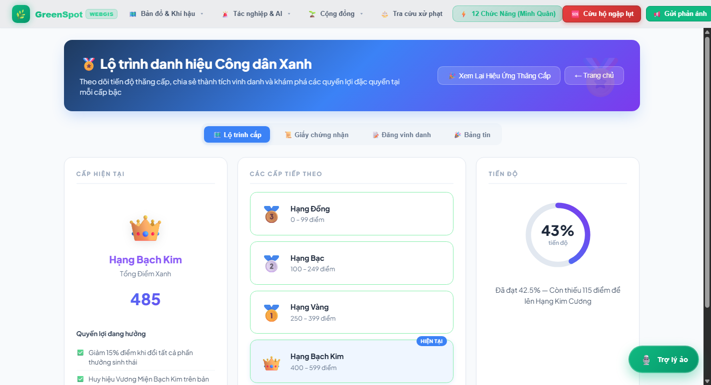